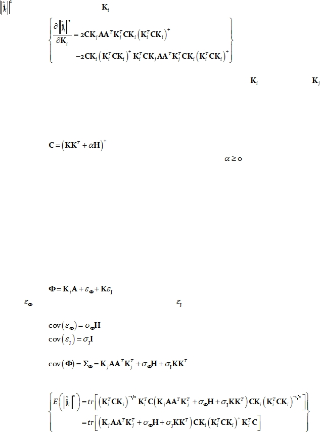

|

Cite as: “R.D. Pascual-Marqui: Discrete, 3D distributed, linear imaging methods of electric neuronal activity. Part 1: exact, zero
error localization. arXiv:0710.3341 [math-ph], 2007-October-17, http://arxiv.org/pdf/0710.3341 ”
Page 5 of 16
Following the same type of derivations as in Greenblatt et al (2005), the derivative of
in Eq. 17 with respect to
is:
Eq. 18:
It can be easily shown that this derivative is zero when
is equal to
,
demonstrating that this family of methods produces exactly localized maxima to point-test
sources anywhere in the brain, i.e. this family of linear imaging methods attains exact, zero
error localization.
Note that the choice:
Eq. 19:
gives the sLORETA method (Pascual-Marqui 2002), where
is the regularization
parameter.
Note that these results can be applied in a straightforward manner to the case where
the current density orientation is known (i.e. known cortical geometry), but with unknown
current density amplitude.
5.
Unbiased localization for sLORETA
As in the previous section, consider the case when the actual source is any arbitrary
point-test source at the j-th voxel, but now the measurements are contaminated with
measurement and biological noise. This means that:
Eq. 20:
where
represents the measurement noise and
the biological noise. It will be assumed
that both noise sources are zero mean and independent, with covariance matrices:
Eq. 21:
Eq. 22:
This gives the following expected covariance matrix for the measurements:
Eq. 23:
The corresponding expected square amplitude then is:
Eq. 24: